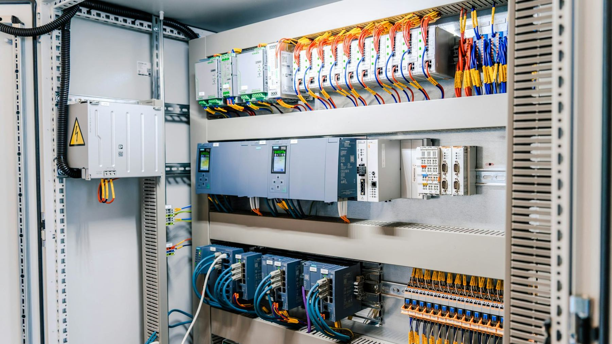
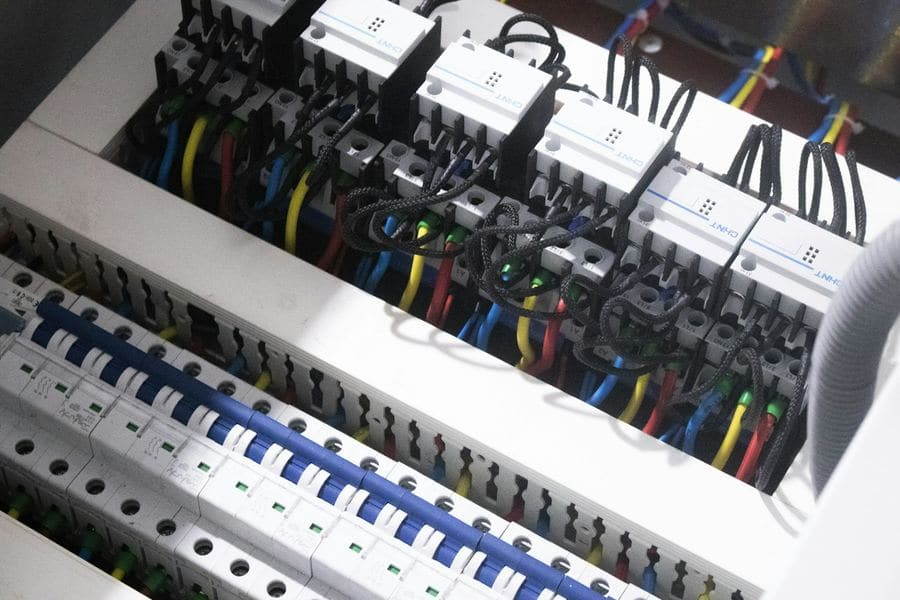
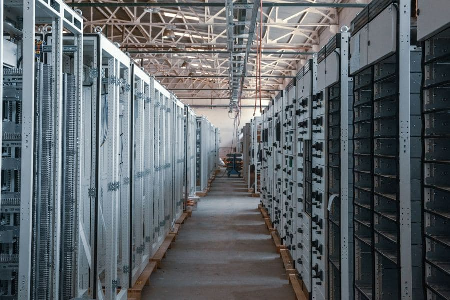
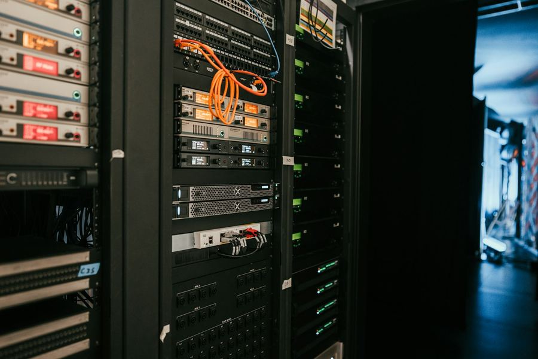
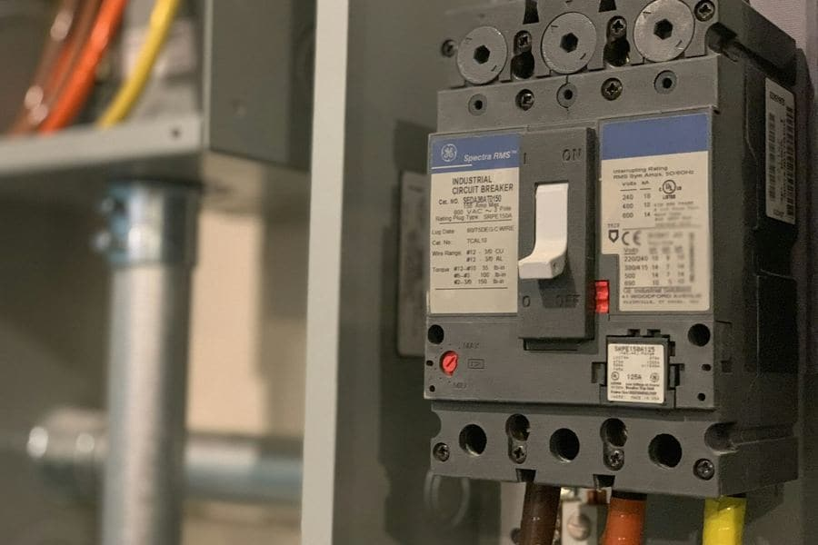
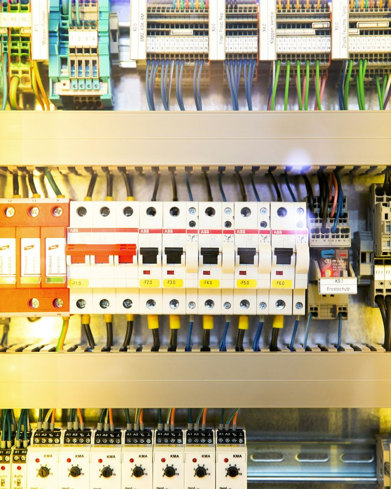

Prefabrykacja · Górny Śląsk
Prefabrykator szaf sterowniczych i rozdzielnic nN z Górnego Śląska.
Twój Partner w Czwartej Rewolucji Przemysłowej.
O firmie
Fourth Phase Sp. z o.o.
Górny Śląsk
Jesteśmy firmą składającą się z zespołu inżynierów o bogatym doświadczeniu zarówno w prefabrykacji, jak i w pracach obiektowych.
Charakteryzują nas dokładność, terminowość i konkurencyjne ceny.
Dlaczego my
Stawiamy na rozwój
Współpracujemy z wszystkimi firmami, małymi czy dużymi, rozwijamy się wspólnie z naszymi partnerami.
Elastyczny standard
Dopasowywujemy produkt końcowy do standardu klienta, jeżeli takiego nie ma, sami go dla ciebie stworzymy.
Zewnętrzne wsparcie
Dzięki współpracy z firmami z różnych sektorów, jesteśmy w stanie zapewnić szerszy zakres usług jak prace obiektowe, czy projekt abyście wy mieli spokojniejszą głowę.
Gdzie działamy
Integratorzy automatyki
Szafy automatyki, z możliwością posadowienia i podłączenia na obiekcie
- Pojedyncze szafy i serie
- Pulpity sterownicze
- Panele operacyjne
Producenci maszyn
Powtarzalne szafy sterownicze, dostosowane do Twoich wymagań i standardów
- Seryjny montaż szaf i pulpitów
- Rozdzielnice zasilające dedykowane do maszyn
- Prefabrykacja wiązek i okablowania
Przemysł i zakłady produkcyjne
Modernizacja, rozbudowa oraz niezawodne zasilanie linii produkcyjnych
- Szafy zasilające i rozdzielnice nN
- Systemy sterowania procesami przemysłowymi
- Wymiana i prefabrykacja szaf w trakcie przestojów
Data Center
Gwarancja ciągłości zasilania i bezpieczne rozdzielnice krytyczne
- Rozdzielnice nN główne i podrozdzielnice zasilania gwarantowanego
- Systemy dystrybucji zasilania (PDU)
- Szafy sterowania infrastrukturą techniczną i HVAC
Co budujemy
Na aparaturze dobranej przez nas albo wskazanej przez klienta.

Szafy sterownicze
Dla automatyki przemysłowej, maszyn i linii technologicznych.

Rozdzielnice nN do 6300 A
Od zasilania głównego po dystrybucję energii, zgodnie z PN-EN 61439.

Szafy IT
Dla serwerowni, sieci i systemów niskoprądowych.

Ciężkie aplikacje
Duże prądy, zapylenie, wilgoć i praca na trzy zmiany.

Każda szafa wyjeżdża z protokołem z testów
Mierzymy izolację i ciągłość PE, sprawdzamy działanie i montaż. Wyniki trafiają do protokołu razem z deklaracją CE.
- Deklaracja zgodności CE
- Dokumentacja zgodna z PN-EN 61439
- Protokół z pomiaru izolacji i ciągłości PE
- Zmiany w schemacie tylko po uzgodnieniu na piśmie
Najczęstsze pytania
Pozostałe najszybciej wyjaśnimy przez telefon.
PN-EN 61439.
Tak, pracujemy zarówno na materiale od klienta jak i mamy możliwość zakupu go sami, zależnie od tego co jest korzystniejsze dla klienta.
Czas przygotowania oferty jest silnie uzależniony od jej wielkości. Termin realizacji podajemy razem z wyceną, zależnie od dostępności aparatury.
Tak, oferujemy takie usługi.
Tak, na terenie całej Unii Europejskiej.
Zapytanie o wycenę
Opiszcie, czego potrzebujecie, a w ciągu 24 h odpiszemy. Schemat i listę aparatury można przesłać w odpowiedzi na naszą wiadomość.
Wolicie rozmowę? +48 780 727 190